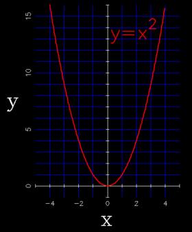

| In astronomy, the parabola features in both the construction of telescopes and in the motion of comets around the Sun. A parabola is one of the four conic sections – a plane intersecting a cone parallel to one edge traces out a parabola. |

The most basic parabola y = x2
Credit: Swinburne |
| A parabola has the functional form: | |
| y = A x2 | |
|---|---|
| where A is the constant of proportionality. |
Parabolas in Telescope Design
| The parabola is the exact shape required to focus a plane wave to a single point. Hence parabolic dishes coherently (i.e. in phase) add electromagnetic radiation at a point and are central to many telescope designs in both the optical and radio. For a parabola of equation y = A x2, the point of focus lies at ( x = 0, y = A/4). |
Parabolas in Nature
Curiously a comet falling from a great distance towards the Sun will trace out a parabolic orbit with the Sun at the focus of the parabola. This is just a consequence of Newton’s laws of motion and gravitation. Similarly a projectile on Earth follows a parabolic arc as it falls under gravity.